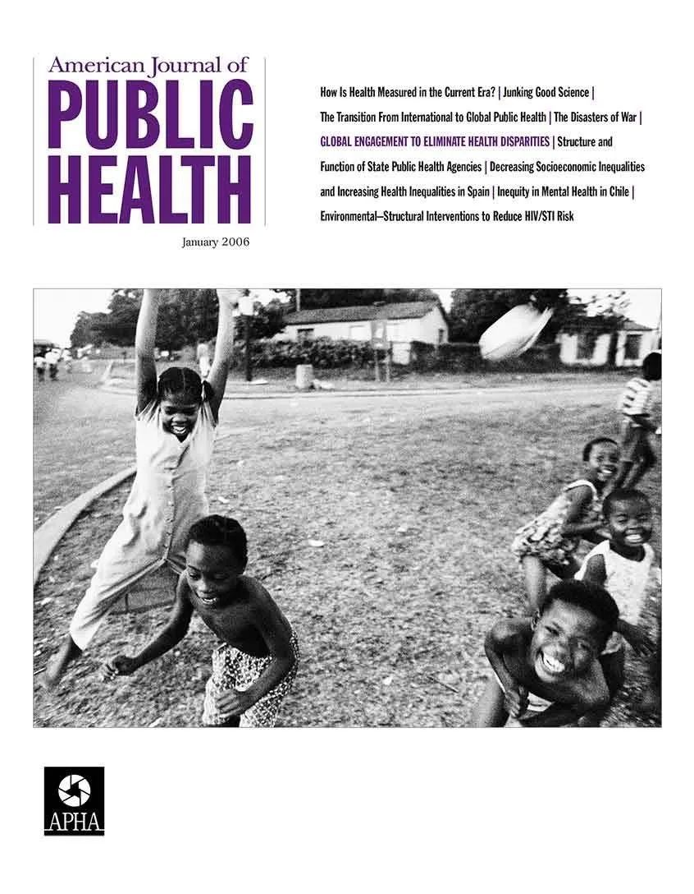
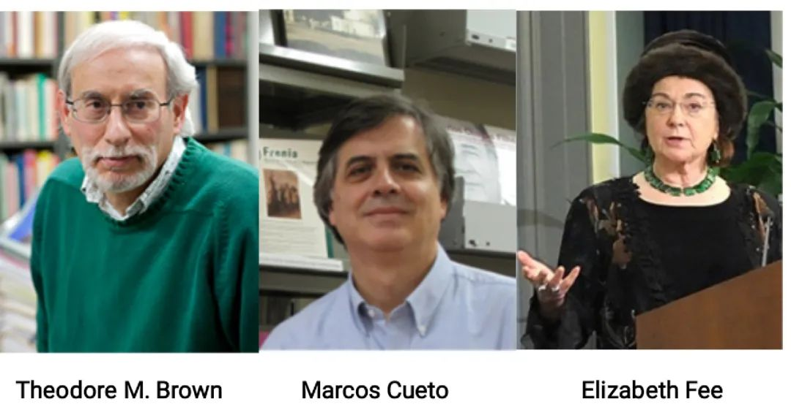

收录于合集

**编者按
**
在新冠疫情席卷全球的当下，世界卫生组织（WHO）作为指导和协调卫生问题的核心国际组织，经受着全新病毒和大国角力的双重挑战。在从“国际卫生”到“全球卫生”的术语变革背后，是什么使WHO转变生存策略，走向“全球卫生”的中心？本文简要回顾了WHO成立头50年的发展史，架构起WHO与“全球卫生”之间的联系。
作品简介
【作者】 西奥多·布朗（Theodore M. Brown），美国罗切斯特大学历史学与医学人文名誉教授；马科斯·奎托（Marcos Cueto），巴西奥斯瓦尔多·克鲁兹基金会旗下医学与科学史中心（Casa de Oswaldo Cruz）研究员；伊丽莎白·费（Elizabeth Fee），科学、医学与健康史学家，生前（2018年逝世）曾任美国国家医学图书馆医史部部长。
【编译】 周玫琳（国政学人编译员，伦敦大学亚非学院历史系在读博士生）
【校对】 赵 雷
【审核】 许文婷
【排版】 杨 洋
【来源】 Brown, T. M., Cueto, M., & Fee, E. (2006), “The World Health Organization and the transition from “international” to “global” public health,” American Journal of Public Health, 96 (1), 62-72.

期刊介绍
 《美国公共卫生杂志（American Journal of Public Health）》是美国公共卫生协会（American Public Health Association，APHA）发行的经同行审议的机关性月刊，致力于出版公共卫生领域的研究、研究方法和项目评估等方面的原创文章。该期刊创立于1911年，其使命是促进公共卫生研究、政策、实践和教育。2017年，该刊的影响系数为4.380，在社会科学引文索引（SSCI）“公共、环境与职业卫生”类别内的156种期刊中位列第4。
世界卫生组织与公共卫生从“国际”到“全球”的转型
The World Health Organization and the Transition from “International” to “Global” Public Health

内容提要
“全球卫生（global health）”一词正在快速取代“国际卫生（international health）”这一更旧的术语。本文描述了世界卫生组织（WHO）在公共卫生事业从“国际”转向“全球”过程中的角色，并认为“全球卫生”是作为更宏大的政治和历史进程的一部分出现的，在该过程中，WHO发现其主导角色受到挑战，并开始在一组变动的权力联盟中重新寻找自己的定位。从1948年到1998年，WHO从毋庸置疑的国际卫生领袖演变为一个危机重重的组织，面临财政短缺、地位削弱的问题，尤其是在强有力的新参与者影响力上升的情况下。本文认为，WHO开始将自身重塑为全球卫生事业的协调者、战略规划者和领导者，这是一种应对转型的国际政治环境的生存策略。
文章导读
01
**导言
**
近来的医学与公共卫生学文献体现出一个正在进行的重要转型。诸如“全球”（global）、“全球化”（globalization）及其衍生词汇到处都是，而在国际公共卫生的具体语境下，“全球”似乎成为更受青睐的权威性术语。作为一项指标，生物医学搜索引擎PudMed上的条目数说明“全球卫生（global health）”一词正在快速崛起，似乎即将取代“国际卫生（international health）”。尽管大学、政府机构和私人慈善事业都广泛使用“全球卫生”一词，其根源与意义却依旧不清晰。本文围绕全球卫生术语的诞生提供历史见解。作者认为，这种术语转变不仅仅是一种语言潮流，对其进行研究将具有重要的学术意义。本文旨在对“全球卫生”的意义、出现和重要性进行批判性分析，并将其受到的追捧置于更广的历史背景下理解。本文尤其关注世界卫生组织（WHO）在国际与全球卫生中的作用，以及该组织在从“国际”到“全球”概念的转型过程中所扮演的能动者（agent）角色。作者首先定义并区别了一些核心术语。“国际卫生”一词早在十九世纪晚期和二十世纪早期就流行了，当时它主要强调对跨国界（“国际”的意义所在）流行病的管控。“政府间（intergovernmental）”指涉主权国家政府之间的关系，而“政府间卫生”特指这种关系范畴下的公共卫生政策与实践。一般而言，“全球卫生”意味着把对整个星球的人民健康需求的考虑置于个别国家的关切之上。“全球”一词也与各种超越政府或政府间性质的组织机构（例如媒体、具备国际影响力的基金会、非政府组织、跨国集团等）重要性增强有关。从逻辑上讲，“国际”、“政府间”和“全球”未必互斥，而且实际上可以互相补充。所以，可以说WHO是一个 政府间 机构，它执行 国际 职能，并以促进 全球 健康为目标。在理解这些定义的基础上，不难发现，全球卫生并不全是过去几年的新发明。“全球”一词早在上世纪90年代之前就被间或使用，例如：从50年代到70年代，WHO发起过“全球消灭疟疾计划”，其多份手册、报告、研究的标题或主题涵盖“全球”一词。但在当时，该术语至多只是被零星使用在官方声明和文件中，影响有限。如今，人们更频繁地提及全球卫生。但问题依旧存在：多少人参与了这场术语的更迭？他们如何理解这一变化，是潮流一时、微不足道还是鞭辟入里？在1999年出版的一份题为《美国公共卫生领袖转向全球卫生新范式》报告中，29位“国际卫生领袖”给出了他们的答案。在这些受访者中，一半认为不需要新术语，“全球卫生”不过是无意义的专业行话；另一半认为国际卫生和全球卫生之间有深刻的区别，而“全球”显然更具跨国性（transnational）。1998年，雅克（Derek Yach）和贝彻（Douglas Bettcher）的文章《公共卫生的全球化》向抓住新全球卫生的精髓和根源更近了一步。在对“全球化”进行定义后，他们提出公共卫生的全球化具有积极与消极的两面性：一方面，有用的技术、观点和价值得以便捷传播；另一方面，一系列风险出现，包括削弱的社会安全网络、便利化的烟草、酒精与精神类药物销售、传染病的世界性传播和环境的快速恶化，它们都有危险的公共卫生后果。但是，雅克和贝彻相信WHO能够将这些风险转化为机遇。他们认为，WHO能够通过加强其全球监控与警示体系及协助提供更有效的信息和监控系统，创造一个“全球早期预警体系”。他们认为，即便最强大的国家也会认同这套新的全球性相互依赖的世界体系，因为它们会意识到参与是符合其最大利益的。本文作者认为，雅克和贝彻在提倡全球公共卫生的优点与WHO的领导作用时批判性不足。他们援引了希尔瓦（George Silver）的批评。希尔瓦指出雅克和贝彻其实为WHO工作，且他们乐观的立场和WHO官员及其支持者相仿；但WHO实际上情况糟糕，其“领导力已经流向财力更雄厚、影响力更大的世界银行，使命也被分散给其他联合国机构”；富裕的捐助国拖欠巨额款项，这让联合国及其机构“陷入混乱，受财政短缺和内部无能掣肘，被地盘之争和跨国界政策打击”。在这种现实下，雅克和贝彻对全球公共卫生的倡导及其与WHO的紧密联系至少是耐人寻味的——为什么广受批评、显然束手束脚的WHO的发言人对“全球”公共卫生表现得如此乐观？
02
世界卫生组织（WHO）发展史简述
2.1 早期发展（20世纪40-60年代） 回顾WHO从1948年到1998年的历史，可以帮助我们更好地理解雅克和贝彻——以及更广义的WHO组织——的角色。在这段时期内，WHO从国际卫生毋庸置疑的领袖，转变为在充满竞争的全球卫生世界中寻求自己的位置。1948年，随着在瑞士日内瓦召开的第一届世界卫生大会正式批准其章程，WHO成立。为全球卫生建立常设性机构的设想可以被追溯到1902年的美洲共和国国际卫生署（International Sanitary Office of the American Republics），其后该组织发展为泛美卫生局（Pan American Sanitary Bureau）和泛美卫生组织（Pan American Health Organization）。洛克菲勒基金会（尤其是其国际卫生部）也是20世纪早期十分重要的国际卫生参与者。两个设立在欧洲的国际卫生机构也十分重要，一是1907年成立于巴黎的国际公共卫生署（Office Internationale d’Hygiène Publique，简称OIHP），该组织聚焦关于国际卫生协议和流行病信息交流的基本活动；二是从1920年开始运作的国际联盟卫生组织（League of Nations Health Organization，简称LNHO），该组织总部设在日内瓦，资助了一系列国际疾病（防治）项目，并公开流行病情报与技术报告。尽管面临种种困难，OIHP和LNHO都经历了第二次世界大战的考验，在战后定义国际卫生未来的关键时刻依然存在。1945年，决议成立联合国的国际会议同时决定创立一个新的专门卫生机构。与会者首先组建了一个由杰出的卫生专家组成的委员会。该委员会在1946至1948年间举行会晤，筹备新国际卫生组织。泛美卫生局和联合国善后救济总署（UNRRA）的代表也参与了这一过程。在此背景下，第一届世界卫生大会于1948年6月在日内瓦举行，WHO正式成立。OIHP、LNHO和UNRRA都被整合进这一新机构。泛美卫生局被允许保留作为一种区域化计划的自主地位。WHO正式将世界划分为一系列区域，包括美洲、东南亚、欧洲、东地中海、西太平洋与非洲，但它在50年代前并未完全施行这种区域化。尽管“国际”和“政府间”思路在40年代和50年代很流行，但WHO的命名以“世界（world）”为首，其实昭示了一种世界范围的“全球”视角。第一任WHO总干事布洛克·奇泽姆（Brock Chisholm）是一名和英国社会医学传统有松散联系的加拿大精神病学家。作为WHO经费的主要贡献国，美国扮演了一个矛盾的角色：一方面，它支持联合国体系设定的广阔的世界性目标；但另一方面，它小心守护自己的主权，保持着在美洲以国家安全名义进行单边干涉的权利。WHO面临的另一个问题是其宪章必须由民族国家来正式批准和签署，而这一进程是缓慢的。作为一个政府间机构，WHO必须回应更大的政治环境。冷战时期的政治尤其重要，对WHO的政策和人员造成了明显的影响。因此，苏联和其他共产主义国家在1949年退出联合国体系和WHO后，美国及其盟国很容易（在其中）施加决定性影响。1953年，奇泽姆的总干事任期结束，由巴西人马克里诺·坎道（Marcolino Candau）接替。坎道担任这一职位长达20年以上。从1949年起，WHO是美国利益的紧密同盟，直到1956年苏联重返联合国和WHO。1955年，坎道被委任监督被同年世界卫生大会通过的WHO消灭疟疾运动。消灭疟疾的宏伟目标，是在人们对广泛喷洒灭蚊剂DDT以消灭蚊虫的能力怀有极大热情与乐观的背景下被设立并推进的。美国及其盟国相信，全球消灭疟疾运动会促进经济增长，为美国技术与工业品创造海外市场。它也会为当地政府及其亲美人员提供支持，在对抗共产主义的战役中助赢“人心”。对应当时的发展理论，该运动推进从外引入的技术，且在计划与实施中不尝试争取当地人的参与。这种发展援助模式完美契合了冷战时期美国用有限的社会改革推动现代化的努力。随着1956年苏联和其他共产主义国家的回归，世界卫生大会的政治均衡出现变动，而坎道适应了这种变化的力量平衡。在60年代期间，消灭疟疾运动遭遇了严重困难；最终在1969年，该运动遭遇了巨大且尴尬的失败。该年，通过宣布在世界上许多地方不可能消灭疟疾，世界卫生大会开始进行一场缓慢的撤退，回到过去的疟疾控制计划。但1969年还是有个新转折：该届大会强调了发展乡村卫生体系和把疟疾控制纳入一般健康服务的必要性。当苏联回到WHO时，其大会代表是该国卫生部副部长。他认为在世界范围内消灭天花在科学上可行，社会上可期，经济上值得。苏联希望在全球卫生（领域）留下自己的印记，而认识到均势变化的坎道乐意与之合作。苏联和古巴分别同意提供2500万和200万冻干疫苗，并于1959年世界卫生大会开启了全球消灭天花计划。到了60年代，技术进步使得疫苗接种更便宜、便捷、有效。美国对消灭天花的兴趣陡然增加。1965年，林登·约翰逊（Lyndon Johnson）指派美国代表团前往世界卫生大会，承诺美国为消灭天花的国际计划提供支持。当时，天花疾病依旧在30多个国家肆虐。到了1967年，在世界最强有力的参与者的支持下，WHO发起了强化版消灭天花计划，这一计划最终将取得令人惊异的成功。
2.2 初级卫生保健的承诺与危险（1973-1993年） 在WHO内部，有一种紧张的对立存在于两种（工作）路径之间：一是针对人口健康的社会经济路径，二是聚焦技术或疾病的路径。二者未必不相容，但他们经常发生冲突。随着权力均衡的变动、国际参与者利益的变化、关键人物的智力与意识形态贡献，以及所有这些要素和卫生政策制定过程的互动，两种路径获得的关注此起彼伏。在60-70年代，非洲国家的去殖民化、民族主义和社会主义运动的拓展、强调长期社会经济增长而非短期技术干预的新发展理论成为当时政治环境的特征，它们显著影响了WHO的变化。在以“不结盟运动”为代表的组织内实现联合后，发展中国家促成了联合国贸易和发展会议（UNCTAD）的诞生，在此它们坚决要求更公平的贸易条款与更慷慨的发展融资。在华盛顿，民权运动和其他社会运动的展开让国家的优先事项发生变动，更自由的政治（风气）取代了50年代的保守主义。这种变化的政治环境被反映在WHO的相应变化中。60年代，WHO承认强化的健康基础设施是疟疾控制计划（尤其是在非洲）的先决条件。1968年，坎道要求开展一项支持治疗与预防保健服务的综合性一体计划。一位苏联代表呼吁展开一项组织性研究，以探究推动基础健康服务发展的方法 。1971年1月，世界卫生大会执行委员会同意进行这项研究，其成果在1973年被呈于大会。从过去的卫生服务模式到后来的“初级卫生保健（Primary Health Care）”模式，WHO的工作方法经历了转型。这种新模式以非政府组织和在世界各地基层工作的医学传教士的思想和实践为基础。通过1973年中国重返联合国一事，以及人们对中国改善乡村卫生条件的“赤脚医生”模式深感兴趣，这一模式获得更多声量。这些经验都强化了“初级卫生保健”模式的迫切性，它要求训练社区卫生工作者、解决基本的经济与环境问题。推进这些新方法的先锋是丹麦人哈夫丹·马勒（Halfdan T. Mahler），他在1973-1988年担任WHO总干事。在苏联代表对执行委员会施加的压力下，马勒同意在苏联阿拉木图（届时为哈萨克斯坦首府）召开一场关于卫生服务组织的大型会议。马勒起初是不情愿的，因为他不同意苏联提倡的高度集中、医学化的卫生服务供给方法。1978年9月，苏联成功举办该会议，但该会议本身更反映了马勒而非苏联的观点。《阿拉木图初级卫生保健宣言》（以下简称《阿拉木图宣言》）与“在2000年实现全民健康”的目标，都在推崇一种关于卫生和社会经济发展的“交叉”并多维的方法，强调“适宜的技术”运用，并敦促社区积极参与各层级卫生保健与健康教育。由于一些国际机构缺乏耐心，WHO的“初级卫生保健”概念后来遭到扭曲，一些学者对此感到遗憾。很多政府、机构与个人认为WHO的这一构想“不切实际”且不可实现。将《阿拉木图宣言》的理想主义简化为一系列实际技术干预的过程始于1979年在意大利贝拉吉奥举办的一场小型会议，该会议深受美国与会者及政策的影响，由洛克菲勒基金会赞助资金，也得到了世界银行的援助。贝拉吉奥会议聚焦于一个与《阿拉木图宣言》的“初级卫生保健”不同的概念：“选择性初级卫生保健（Selective Primary Health Care）”，该概念的基础是务实、低成本的干预，其规模有限，易于监控和评估。主要由于联合国儿童基金会（UNICEF）的支持，“选择性初级卫生保健”得以在儿童卫生方面得到操作化。80年代，WHO不得不重视世界银行不断增长的影响力。1979年，世界银行创立了人口、健康与营养部，并采取了一套资助卫生计划的政策。世界银行在其1980年的报告中提出，其援助下的直接政府行为可以对抗营养缺乏和不良健康状况。它还指出，促进健康和营养能加速经济增长，从而为社会部门的支出提供了正面论据。随着世界银行为卫生服务提供直接贷款，它也要求更有效利用资源，并探讨私人和公共部门在卫生保健融资中的作用。相比国家政府，世界银行更青睐自由市场。在发展中国家负债加剧、卫生支出来源日益稀缺的背景下，世界银行在艾滋病疫情爆发时推进的“结构性调整”措施虽然招致剧烈批评，但也强化了其新影响力。相较于世界银行与日俱增的权威，在80年代，WHO的声望开始衰落。该衰落的一大标志是1982年世界卫生大会关于冻结WHO预算的投票。1985年，美国决定只支付其支持所有联合国机构的核定金额的20%，并不予支付WHO的常规预算。这些事件发生在WHO与UNICEF及其他机构关系紧张之时，也是“选择性”与“综合性”初级卫生保健争议甚嚣尘上之时。1988年，马勒作为WHO总干事的15年任期结束。出人意料的是，日本学者、前WHO西太平洋区域办事处主任中岛宏（Hiroshi Nakajima）被选为新任总干事。
2.3. 身陷危机的WHO（1988-1998年） 作为被选为联合国机构一把手的第一位日本公民，中岛很快就成为WHO历史上最受争议的总干事。他的提名没有获得美国和许多欧洲、拉美国家支持，而他在任内的表现也几乎没有抚平他们的疑虑。中岛的确尝试在许多方面（包括烟草、全球疾病监测、公私合作伙伴关系等）发起重要行动，但激烈的批评蜂拥而至，质疑他独断专行的行事风格、糟糕的管理能力、无法进行有效沟通、任人唯亲和腐败问题。80年代后期，WHO问题的另一表现是“预算外（extrabudgetary）”资金的增长。诚如沃尔特（Gill Walt）所论，WHO这时经历了一个关键转型：从主要依赖“常规预算”（由成员国以人口规模和国民生产总值为基础的捐款构成），转向极大增加对预算外资金（来自多边机构或“捐助”国捐款）的依赖。截至1986-1987年间，WHO预算外资金几乎赶上常规预算的金额。截至90年代初期，预算外资金占比反超常规预算，达到WHO总预算的54%。由于这一预算转型，WHO开始面临严重的问题。尽管在表面上，由各成员国组成的世界卫生大会仍制定优先事项和政策，但在数量上由贫困和发展中国家主导的大会只在常规预算上有权威，而该预算从80年代初期就被冻结了。富裕的捐助国和多边机构（如世界银行）在很大程度上可以控制他们捐助的预算外资金。由此，他们实际上创造了一系列独立于WHO计划和决策结构的“垂直”项目。沃尔特认为WHO面临的困境是，尽管预算外资金增加了组织的总预算，“这却造成协调与持续的困难，导致融资的不可预测性，还加大了对个别捐助国满意度的依赖”。在80年代后期和90年代前期，世界银行信心满满地踏入日益低效的WHO留下的真空。WHO官员无力或不愿回应围绕新自由主义路径组织的新国际政治经济。世界银行则提出，既有的卫生系统浪费且低效，它支持更依赖私人部门的卫生保健供给，呼吁降低卫生服务提供的公共参与度。世界银行的政策与实践招致争议，但毋庸置疑的是，截至90年代前期，它已成为了国际卫生中的主导力量。世界银行最大的“相对优势”在于它动员巨额金融资源的能力。到了1990年，世界银行为卫生（项目）提供的贷款超过了WHO的总预算，而截至1996年底，世界银行在卫生、营养和人口领域的累计贷款组合超过135亿美元。但世界银行也意识到，尽管它有强大的经济实力与影响，WHO依旧在卫生和医疗事务上具有丰富的技术专长。各种条件说明，世界银行和WHO合作对双方都有好处。
03
WHO敞怀欢迎“全球卫生”
在上述背景下，WHO开始将自己重新打造为协调者、战略规划者以及“全球卫生”计划的领导者。1992年1月，世界卫生大会执行委员会决定任命一个“工作组”，负责建议WHO如何在“全球变化”席卷世界的条件下更有力地开展国际卫生工作。在一定程度上，执行委员会（这一举动）可能是在回应儿童疫苗计划（Children’s Vaccine Initiative），该行动被WHO内部理解为UNICEF、世界银行、联合国开发计划署（UNDP）、洛克菲勒基金会和其他试图控制疫苗发展的组织谋划的一场“政变”。该工作组于1993年5月出台报告，对WHO提出建议：如果WHO试图维持其在卫生领域的领导地位，它必须彻底修整其碎片化的全球、地区和国家计划，减弱常规预算与预算外资金计划之间的竞争，而更重要的是， 增加WHO内部对全球卫生问题的重视，强化WHO在这一领域内的协调性角色。 直到此时，“全球卫生”一词都只在WHO之外被偶尔使用，且经常为政治上的左翼人士在各种“世界”议程上所用。“全球卫生相互依赖”、“全球卫生”进步对公共（而非私人）卫生服务的依赖、“全球卫生”与环境恶化的联系等探讨层出不穷。90年代中期，大量有关全球卫生威胁的文献被创作出来。例如，美国疾控中心（CDC）发行的新期刊开始使用“全球传染病威胁”的词组；各种畅销书和新杂志都在讨论埃博拉病毒、西尼罗河病毒和生物恐怖主义。这些动向包含明确的信息：（世界）显然面临一种全球疾病威胁。1998年，世界卫生大会在WHO的职序等级之外寻得一位能够为组织恢复信誉、提供新愿景的新领袖：挪威前首相、医生和公共卫生专家格罗·哈莱姆·布伦特兰（Gro Harlem Brundtland）。布伦特兰带着令人钦佩的专业技能投入这项任务。她深谙环境运动中的全球思想，也对健康、环境和发展之间的联系有广博而清晰的理解。布伦特兰决心将WHO定位成全球舞台上的重要参与者，超越（各国）卫生部，并在决策桌前谋得一席。她希望把WHO重新打造成一个“重要部门”，能够监视并影响全球舞台上的其他行为体。她成立了一个宏观经济和卫生委员会，由哈佛大学经济学家杰弗里·萨克斯（Jeffery Sachs）主持，并招揽了来自世界银行、国际货币基金组织（IMF）、世界贸易组织（WTO）等组织的官员和公共卫生领袖。该委员会在2001年发布一项报告，提出在发展中国家促进卫生对其经济发展是至关重要的。该报告指出了一系列需要优先（处理）的疾病，它们需要集中的干涉。布伦特兰还开始强化WHO的财务地位，其主要方法是通过组织“全球合作伙伴”和“全球基金”把各种“利益相关者”（包括私人捐助者、政府、双边和多边机构）联系在一起，使其聚焦于具体目标。在此举影响下展开的半自治性项目带来了客观的外部资金，且通常是以“公私合作伙伴关系”的形式实现的。在这些合作伙伴关系中，一个十分重要的参与者是比尔及梅琳达盖茨基金会（Bill & Melinda Gates Foundation），该基金会在1998-2000年间向一个在世界最贫困国家防治疾病（主要通过疫苗和免疫计划）的国际项目贡献了多于17亿美元的捐款。在数年内，约70个“全球卫生合作伙伴关系”被成立。布伦特兰在总干事任期内并非毫无污点、无可指摘。一些归功于她的计划其实是中岛宏启动的，例如《烟草控制框架公约》；其他不少计划在今天看来也值得质疑，例如宏观经济和卫生委员会及"减少疟疾"运动；还有其他方面没有得到足够重视，例如初级卫生保健、艾滋病、卫生与人权、儿童卫生等。但是几乎没人能否认，布伦特兰成功实现了其主要目标：让WHO重塑自身地位，成为快速变化的全球卫生领域中可信并瞩目的贡献者。
04
**结论
**
本文开头的问题是：历史的视角如何能帮助我们理解“全球卫生”术语的诞生？WHO在这种发展中扮演了什么角色？作者认为，基本的回答来自一个事实：在历史的不同时段，WHO时而引领、时而反映、时而适应瞬息万变的国际卫生形势中的变化与挑战。20世纪50-60年代，当生物学、经济学和大国政治的变化改变了外交关系和公共卫生，WHO起初偏狭地侧重消灭疟疾运动，而后转向对卫生服务发展、消灭天花等更广阔的兴趣。70-80年代，WHO发展了“初级卫生保健”的概念，但之后转向了更务实的选择性初级卫生保健，这是因为组织内与组织间互动出现了复杂变化，国际经济政治秩序也有改变。90年代，WHO尝试利用对新浮现的“全球卫生”关切的领导权，将其视作一种组织战略，以求生存和更新。但是，正如WHO并未发明（公共卫生的）消灭主义（eradicationist）或初级保健议程，WHO也没有发明“全球卫生”，而是其他更宏观的力量发挥了作用。当然，WHO协助推动了人们对全球卫生的兴趣，并对新概念与新语汇的扩散贡献卓著。在这一进程中，WHO期望重获协调与领导的角色。WHO的组织性重新定位能否使其重建不可置否的世界人民健康管理者身份？在实践中，这项任务会如何受到影响？目前这还是开放的问题。

本文由国政学人独家编译推荐，文章观点不代表本平台观点，转载请联系授权。


好好学习，天天“在看”